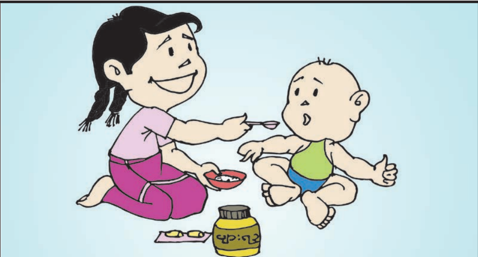
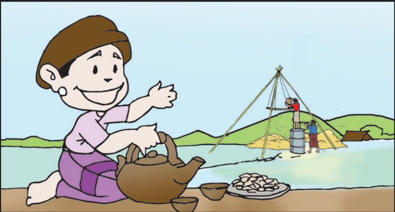

သရလက္ခဏာ သိမှတ်စရာ ဗျည်းနဲ့တွဲကြမှာ(၁.၁)
- -ာ -ား
- -ါ -ါး
ကျန်ဗျည်းအက္ခရာများကို ဝိုက်ချ(ာ)နှင့်ရေးရန်
ဆရာမ[teacher] ရထား[train] ဖလား[water bowl] ကစား[play] အစားအစာ[food]
ညအခါ
လသာသာ
ကစားမလား
နားမလား။
လသာသာ
ကစားမလား
နားမလား။
အစားအစာ
ဝါးစားပါ
အသား ပါသလား
ငါးပါသလား။
ဝါးစားပါ
အသား ပါသလား
ငါးပါသလား။
စာရ သလား
ခဏ လာပါ
ဆရာမ အနား
လာသာ လာပါ။
ခဏ လာပါ
ဆရာမ အနား
လာသာ လာပါ။
သရလက္ခဏာ သိမှတ်စရာ ဗျည်းနဲ့တွဲကြမှာ(၁.၂)
-ိ -ီ -ီး
ဣ ဤ
၏ သည်
ဆီးသီး[plum] ဆီမီး[oil lamp] မီးနီ[red light] ညီမ[yonger sister] သားသမီး[childen]
ညီညီ ညာညာ
အနီးလာ
ဆရာ မိဘ
သတိရ။
အနီးလာ
ဆရာ မိဘ
သတိရ။
အရီး လာသည်။
ဆီးသီး ပါသလား။
အဆီ မစား။
အသီး စားပါ။
ဆီးသီး ပါသလား။
အဆီ မစား။
အသီး စားပါ။
ဤခရီး နီးသလား။
ငါးနာရီ လာရ၏။
မီးရထား စီးလာပါ။
အလကား မစီးရ။
ငါးနာရီ လာရ၏။
မီးရထား စီးလာပါ။
အလကား မစီးရ။
သရလက္ခဏာ သိမှတ်စရာ ဗျည်းနဲ့တွဲကြမှာ(၁.၃)
-ု -ူ -ူး
ဥ ဦ ဦး
ရာသီဥတု[weather] မီးပူ[] ပူး[] တူရိယာ[instrument] မိသားစု[family]
သူပညာထူး၏။
ပထမဆု ရသည်။
ဆု ယူလာသည်။
အတူ ယူစရာ။
ပထမဆု ရသည်။
ဆု ယူလာသည်။
အတူ ယူစရာ။
ရာသီဥတု ပူသည်။
ထီး ယူလာသလား။
ဦးဦး လာ၏။
အနားယူပါ။
ထီး ယူလာသလား။
ဦးဦး လာ၏။
အနားယူပါ။
ဤမိသားစု
ဘုရားဖူး လာ၏။
လူစုလာသည်။
ဦးသာထူး ပါသလား။
ဘုရားဖူး လာ၏။
လူစုလာသည်။
ဦးသာထူး ပါသလား။
သရလက္ခဏာ သိမှတ်စရာ ဗျည်းနဲ့တွဲကြမှာ(၂.၁)
ေ- ေ-့ ေ-း
ဧ ၍
ဈေး[market] ဆေး[medicine] နေ့အခါ[] ရေဘူး[water bottle] ပေးစာ[letter]
ယနေ့ နေသာ၏။
လေမလာ၍ ပူသည်။
ခရီးဝေးက လာရ၏။
ရေအေးအေး ပေးပါ။
လေမလာ၍ ပူသည်။
ခရီးဝေးက လာရ၏။
ရေအေးအေး ပေးပါ။
သားကလေး တီတာတာ
မေမေ့ အနားလာ။
ဖေဖေ မေမေ သူ့စကား
တူတူရေ ဝါး။
မေမေ့ အနားလာ။
ဖေဖေ မေမေ သူ့စကား
တူတူရေ ဝါး။
စာအရေးအသား
အလေးထားပါ။
ငေးမနေရ။
အားပေး ကူညီပါ။
အလေးထားပါ။
ငေးမနေရ။
အားပေး ကူညီပါ။
သရလက္ခဏာ သိမှတ်စရာ ဗျည်းနဲ့တွဲကြမှာ(၂.၂)
-ဲ -ဲ့ -ယ်
-ယ့်
လယ်သမား[farmer] ရေခဲ[ice] ရေဘဝဲ[octopus] ဘဲကလေး[duckling] ကုလားပဲ[chickpea]
ဘယ်က လာသလဲ။
ဘယ်နယ်က လဲ။
အလယ်ကလူ
စကားဝဲ၏။
ဘယ်နယ်က လဲ။
အလယ်ကလူ
စကားဝဲ၏။
သူသည် နုနယ်၏။
လဲနေသူ ထူပေးပါ။
အားငယ်သူ အားပေးပါ။
အတူတူ သယ်ယူပါ။
လဲနေသူ ထူပေးပါ။
အားငယ်သူ အားပေးပါ။
အတူတူ သယ်ယူပါ။
လယ်သမား လူငယ်
စပါးနယ်နေသည်။
မမ စပါးသယ်၏။
မေမေ စားစရာ ဝယ်လာသည်။
ဖရဲသီး ပါသလား။
စပါးနယ်နေသည်။
မမ စပါးသယ်၏။
မေမေ စားစရာ ဝယ်လာသည်။
ဖရဲသီး ပါသလား။
သရလက္ခဏာ သိမှတ်စရာ ဗျည်းနဲ့တွဲကြမှာ(၂.၃)
ေ-ာ ေ-ာ့ ေ-ာ်
ဩ ဪ
ကော်ဖီ[coffe] မော်တော်ကား[car] ဥဩ[Asian koel] လယ်တော[farm] ဩဇာသီး[custard apple]
ဆီမီး ပူဇော်ပါ။
ဆရာတော် တရားဟော၏။
ဒေါသမထားရ။
သာဓု ခေါ်ပါ။
ဆရာတော် တရားဟော၏။
ဒေါသမထားရ။
သာဓု ခေါ်ပါ။
ဇော်က ကနေသည်။
ခါးကော့ ထားပါ။
ရယ်ရယ်မောမော
ပေါ့ပေါ့ပါးပါး
တော်တော် မောသလား။
ခါးကော့ ထားပါ။
ရယ်ရယ်မောမော
ပေါ့ပေါ့ပါးပါး
တော်တော် မောသလား။
ဇာနည် ရဲတော်
လူတော် လူမော်
အဖော်ရ၏။
တော်ပါပေသည်။
လူတော် လူမော်
အဖော်ရ၏။
တော်ပါပေသည်။
သရလက္ခဏာ သိမှတ်စရာ ဗျည်းနဲ့တွဲကြမှာ(၃.၁)
-ံ -ံ့
အန် အန့် အန်း အမ် အမ့် အမ်း
-န် -န့် -န်း -မ် -မ့် -မ်း
အလံ[flag] ငန်း[swan] ငါးမန်း[shark] ပန်ကာ[fun] ပန်းကန်[plate]
ဦးလေး ဘာထမ်း လာသလဲ။
ဘူးသီး ခရမ်းသီး ပါ၏။
တောလမ်းက လာခဲ့သည်။
မမောပန်းပါ။
ဘူးသီး ခရမ်းသီး ပါ၏။
တောလမ်းက လာခဲ့သည်။
မမောပန်းပါ။
ငါး မဖမ်းရ။
ပန်း မခူးရ။
ရေကန်အနီး မဆော့ရ။
စည်းကမ်း လေးစားပါ။
ပန်း မခူးရ။
ရေကန်အနီး မဆော့ရ။
စည်းကမ်း လေးစားပါ။
အလံတော် တလူလူ။
တေးသံ သာယာ၏။
စီတန်း၍ လာနေသည်။
အခမ်းအနား စတော့မည်။
တေးသံ သာယာ၏။
စီတန်း၍ လာနေသည်။
အခမ်းအနား စတော့မည်။
သရလက္ခဏာ သိမှတ်စရာ ဗျည်းနဲ့တွဲကြမှာ(၃.၂)
-ို -ို့ -ိုး
-ိုယ် -ိုယ့်
အိုးစည်[Pot drum] မုဆိုး[hunter] ဆီးယို[plum jam] မီးဖို[kitchen] စာပို့သမား[postman]
ဆရာမ အတန်းထဲသို့ လာသည်။
ရိုရိုသေသေ နေပါ။
စာ တိုးတိုး အံပါ။
ကိုယ့်ကိုယ်ကိုယ် အားကိုးပါ။
ရိုရိုသေသေ နေပါ။
စာ တိုးတိုး အံပါ။
ကိုယ့်ကိုယ်ကိုယ် အားကိုးပါ။
မိဘဆရာ ရိုသေပါ။
ရိုးရိုးသားသား နေပါ။
သာသာယာယာ စကားဆိုပါ။
အဘိုးအိုကို ကန်တော့ပါ။
ရိုးရိုးသားသား နေပါ။
သာသာယာယာ စကားဆိုပါ။
အဘိုးအိုကို ကန်တော့ပါ။
မိုးလရာသီ
အဘိုးတို့ လယ်တဲ
တဲကလေး မိုးယို နေသလား
ကူညီ၍ မိုးပေးပါ။
အဘိုးတို့ လယ်တဲ
တဲကလေး မိုးယို နေသလား
ကူညီ၍ မိုးပေးပါ။
သရလက္ခဏာ သိမှတ်စရာ ဗျည်းနဲ့တွဲကြမှာ(၃.၃)
ဖျာ[mat] မြေဖြူ[chalk] ဖျံ[seal] ကျီးကန်း[crow] မြို့တော်[capital]
နေကျဲကျဲ ပူသည်။
နေပူထဲ မပြေးကစားရ။
အဖျားရောဂါ ရမည်။
နေအေးသောအခါ ပြေးကစားပါ။
နေပူထဲ မပြေးကစားရ။
အဖျားရောဂါ ရမည်။
နေအေးသောအခါ ပြေးကစားပါ။

ပျားရည် ချိုသည်။
အစာကြေပါသည်။
ငါးကြီးဆီ စားပါ။
ကျန်းမာဝဖြိုးလာမည်။
အစာကြေပါသည်။
ငါးကြီးဆီ စားပါ။
ကျန်းမာဝဖြိုးလာမည်။
ကျားကြီး ခြေရာကြီး
မေးဖန်များ စကားရ
ပျော်ပျော်နေ သေခဲ
ကျီစားသန်က ရန်များ၏။
မေးဖန်များ စကားရ
ပျော်ပျော်နေ သေခဲ
ကျီစားသန်က ရန်များ၏။
ဗျည်းတွဲနဲ့ သရလက္ခဏာ ပေါင်းစပ်တွဲကြမှာ(၁.၁)
ပွဲတော်[festival] ငွေကြေး[currrency] လည်ဆွဲ[necklace] အနွေးထည်[sweater] သွား[tooth]
နွေဦးရာသီ
ပလွေသံ သာယာ၏။
နွားများကို ဆွဲလာသည်။
အဝေးသို့ မသွားရ။
နေရာရွေး၍ နားမည်။
ပလွေသံ သာယာ၏။
နွားများကို ဆွဲလာသည်။
အဝေးသို့ မသွားရ။
နေရာရွေး၍ နားမည်။
မယ်ငွေ၏ သားကလေး
အသား ဖြူးဖွေးသည်။
ထွားလည်း ထွား၏။
ယုယုယယ ပွေ့ချီထား၏။
နွေးနွေးထွေးထွေး ထားပါ။
အသား ဖြူးဖွေးသည်။
ထွားလည်း ထွား၏။
ယုယုယယ ပွေ့ချီထား၏။
နွေးနွေးထွေးထွေး ထားပါ။
ဤရွာကလေး သာယာသည်။
ဘူးသီး သခွားသီး ပေါ၏။
ရာသီမရွေး မအားကြပါ။
နွားများ မွေးမြူထားသည်။
ပျော်မွေ့စွာ နေကြသည်။
ဘူးသီး သခွားသီး ပေါ၏။
ရာသီမရွေး မအားကြပါ။
နွားများ မွေးမြူထားသည်။
ပျော်မွေ့စွာ နေကြသည်။
ဗျည်းတွဲနဲ့ သရလက္ခဏာ ပေါင်းစပ်တွဲကြမှာ(၁.၂)
လှံတံ[spear] မှို[mushroom] လှေကား[stair] အရှေ့[east] ပဲကြီးလှော်[roasted butter beans]
 လူကလေး မှေးနေသည်။
လူကလေး မှေးနေသည်။အအေးမိ၍ နှာစေးသည်။
ရှူဆေး ရှိသလား။
နွေးနွေးထွေးထွေး ရှိပါစေ။

စပါး လှေ့နေကြသည်။
အဆာပြေ ပဲလှော် ဝါးပါ။
ရေနွမ်းကြမ်း ငှဲ့ပေးပါ။
စပါး ပေါ်မှ အလှူပေးမည်။
အဆာပြေ ပဲလှော် ဝါးပါ။
ရေနွမ်းကြမ်း ငှဲ့ပေးပါ။
စပါး ပေါ်မှ အလှူပေးမည်။
ပညာကို ရှာမှီးပါ။
အမှားအမှန် ခွဲခြားပါ။
သတိ ရှိရမည်။
သနားညှာတာမှု ရှိကြပါတဲ့။
အမှားအမှန် ခွဲခြားပါ။
သတိ ရှိရမည်။
သနားညှာတာမှု ရှိကြပါတဲ့။
ဗျည်းတွဲနဲ့ သရလက္ခဏာ ပေါင်းစပ်တွဲကြမှာ(၂.၁)
ကြွယ်ဝ[] ကျွဲ[buffalo] ကျွေး[feed] ကျွမ်းဘား[gymnastics] ချွေးမ[daughter-in-law]
ရွာလူကြီးများ ကြွလာပြီ။
ကြွေပန်းကန် ယူခဲ့ပါ။
ကျွဲကောသီး ထည့်ထားပါ။
ကျွေးမွေး ပြုစုပါရစေ။
ကြွေပန်းကန် ယူခဲ့ပါ။
ကျွဲကောသီး ထည့်ထားပါ။
ကျွေးမွေး ပြုစုပါရစေ။
လူကလေး အသီးခြွေချ၏။
အသီးများ ကြွေကျလာပြီ။
ကျွဲနွား မစားစေရ။
လူအများကို ကျွေးပါ။
အသီးများ ကြွေကျလာပြီ။
ကျွဲနွား မစားစေရ။
လူအများကို ကျွေးပါ။
ကြွေပန်းအိုး ဝယ်လာသည်။
အကြွေး မဝယ်ပါ။
ကြွားကြွားဝါဝါ မနေရ။
ငွေကို ချွေတာပါ။
အကြွေး မဝယ်ပါ။
ကြွားကြွားဝါဝါ မနေရ။
ငွေကို ချွေတာပါ။
ဗျည်းတွဲနဲ့ သရလက္ခဏာ ပေါင်းစပ်တွဲကြမှာ(၂.၂)
မျှော့[leech] လျှာ[tongue] မျှစ်[bamboo shoot] လျှော့ဈေး[promotion] ရေလျှံခြင်း[flood]
 ရရေကန်ထဲမှာ မျှော့ရှိ၏။
ရရေကန်ထဲမှာ မျှော့ရှိ၏။ ငါးမျှားကြမည်။
ငါးမျှားတွ ယူခဲ့ပါ။
ငါးရက ညီညီမျှမျှ ယူကြမည်။
 အရသာကို လျှာက သိသည်။
အရသာကို လျှာက သိသည်။ဈေးသည် မျှော်နေသည်။
ဈေးလျှော့၍ ပေးမည်လား။
မျှမျှတတ သဘောထားပါ။
 လယ်ထဲမှာ ရေလျှံနေပြီ။
လယ်ထဲမှာ ရေလျှံနေပြီ။လျှော်စည်းများ မျောပါနေကြသည်။
လှေမျှော၍ ဆယ်ယူပါ။
လျှောကျမည် သတိထား။
ဗျည်းတွဲနဲ့ သရလက္ခဏာ ပေါင်းစပ်တွဲကြမှာ(၂.၃)
ပျံလွှား[swallow] မွှေသည်[mix] ရွှေ[gold] ပျော်ရွှင်[happy]
 ရွလွှသမားများ လွှဆွဲနေကြသည်။
ရွလွှသမားများ လွှဆွဲနေကြသည်။ချွေးများ စိုရွဲနေသည်။
စားစရာကို နွှေးထားပါ။
အသီးများ နွှာထားပါ။
 နွှဲပျော်စရာ တို့တောရွာ
နွှဲပျော်စရာ တို့တောရွာစပါးရွှေဝါ အားထားစရာ
စံပယ်ပန်းများ မွှေးလှ၏။
ပျံလွှားများ ပျံနေကြသည်။
 သူ့ကိုယ်မှာ ရေတွေရွှဲနေသည်။
သူ့ကိုယ်မှာ ရေတွေရွှဲနေသည်။ပဝါ လွှားထားပါ။
မီးမြန်မြန် မွှေးပါ။
မီးနားသို့ ရွှေ့နေပါ။